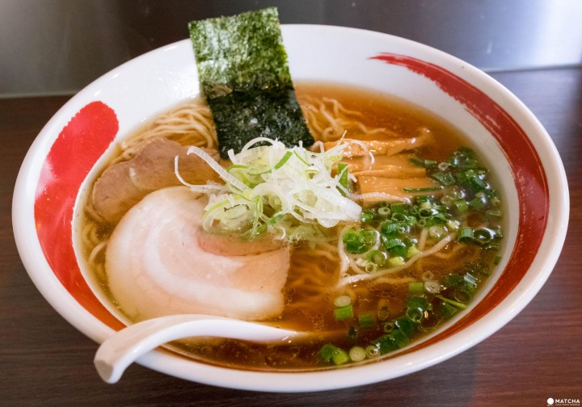
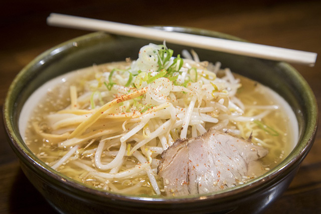
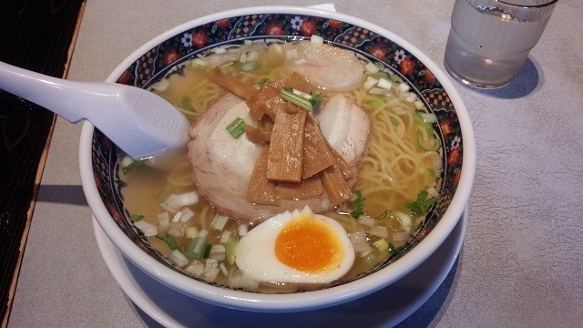
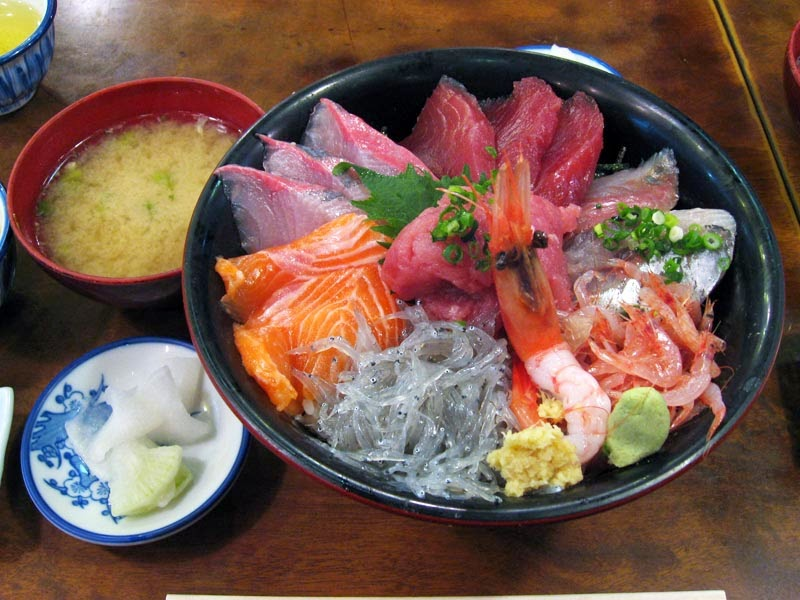
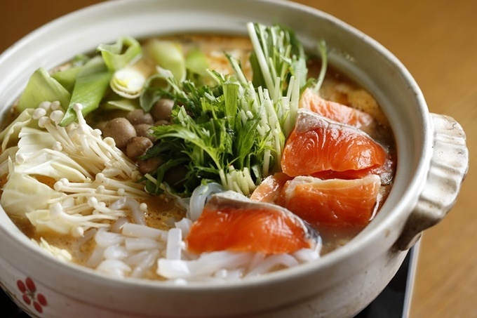
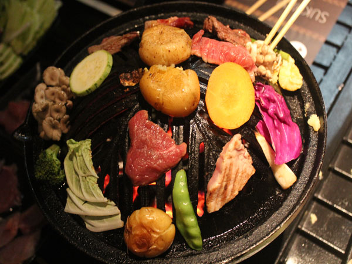

Comidas Típicas
Un destino para ‘gourmets’
Sapporo es el lugar perfecto para probar la buena cocina de la isla de Hokkaido. La ciudad tiene una cultura gastronómica propia y es posible comer bien hasta en la estación, aunque en realidad, se puede comer fantásticamente bien en toda la isla. Las especialidades de la zona son el marisco, el ramen, el jingisukan y la cocina ainu. Para muchos viajeros japoneses, Hokkaido es sinónimo de marisco y más concretamente de cangrejo. Muchos restaurantes y resorts de Sapporo sirven auténticos festines de cangrejo, pero en cualquier mercado de pescado, restaurante de sushi o shokudo se puede pedir marisco, y en cualquier mes del año, porque hay especialidades propias para cada una de las temporadas. Hokkaido también tiene tres “ciudades de ramen”, cada una especializada en un estilo de fideos distinto: Sapporo, Hakodate y Asahikawa. Aunque la comida típica de Hokkaido es el jingisukan, un plato de cordero a la brasa que se cocina sobre una plancha de hierro que supuestamente recuerda al casco de Gengis Kan, de ahí su nombre, algo modificado con el paso del tiempo. Finalmente, los gourmets podrán disfrutar de algunas creaciones de cocina autóctona original de Hokkaido que se conservan tal cual (salmón, ciervo, raíces y brotes de los bosques, algas, miso, grasa de oso, etc.). Hay un puñado de restaurantes del Parque Nacional de Akan que sirven algunos platos ainu, como el ruibe, un salmón que se congela en invierno al aire libre y se corta al estilo sashimi y se sirve con salsa de soja y pimientos.
  Marisco
El pescado y el marisco del mar de Hokkaido son populares en todo Japón y muchos visitantes acuden a disfrutar de los deliciosos cangrejos, vieiras, erizos de mar, salmones, arenques, halibuts, bacalaos, calamares, pulpos, gambas, abulones y almejas, así como sabrosas algas comestibles. Ciaos en los mares del norte, estos productos tienen un sabor delicioso y se encuentran entre los mejores. Entre ellos, los cangrejos son excepcionales: el cangrejo de nieve, el centollo o el cangrejo rey. En temporada alta, destacan por su tamaño y su delicioso sabor, ya sean hervidos o en sashimi. Tampoco puede perderse el erizo de mar alimentado de algas o todo tipo de sashimi. Puede saborear el pescado en los numerosos mercados que ofrecen puestos de degustación. Los restaurantes ofrecen platos que permiten probar por un precio razonable una gran variedad de pescado y marisco crudo, como el donburimeshi, gran tazón de arroz generosamente cubierto con erizo de mar, huevas de salmón, vieiras, gambas o cangrejo.
Ishikari-nabe
Este plato tradicional de Hokkaido utiliza un salmón entero, de la cabeza a la cola. Su nombre proviene del río Ishikari-gawa, conocido por el salmón que se pesca ahí. A este plato también se le llama tokachi-nabe en la región de Obihiro. Se guisan porciones de salmón con verduras, tofu y konnyaku en un caldo de algas aromatizadas con miso. Las patatas y la col producidos localmente se utilizan con frecuencia en este plato rústico, en el que se ponen de relieve tanto los sabores del mar como los de la tierra. Originalmente el ishikari-nabe consistía en un guiso de salmón y verduras preparado por los Ainus, el pueblo indígena de la isla, sazonado con miso tras la llegada de los japoneses desde el sur en el siglo XVIII.
Genghis Khan
Finas lonchas de carne de cordero (el cordero apenas se usa en la cocina japonesa) y vegetales (brotes de soja, col y calabaza) se cocinan sobre una parrilla especial de hierro en forma de casco. Se decía que era el plato favorito de Genghis Khan, de ahí su nombre. También se decía que los guerreros mongoles asaban el cordero en sus cascos. Sin embargo, este plato es especialmente apreciado en Hokkaido, en particular en las enormes y populares cervecerías, como el Sapporo Bier Garten o el Kirin Beer Garden.
